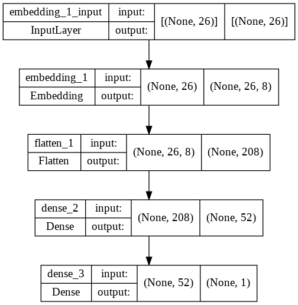
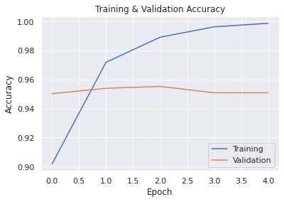
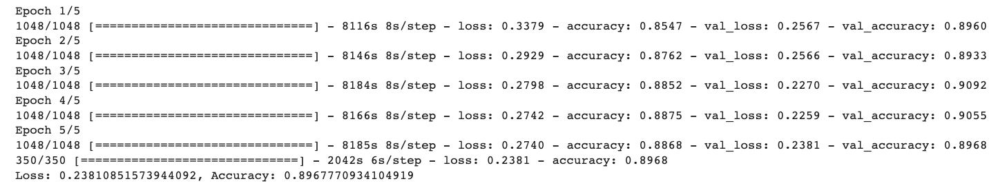
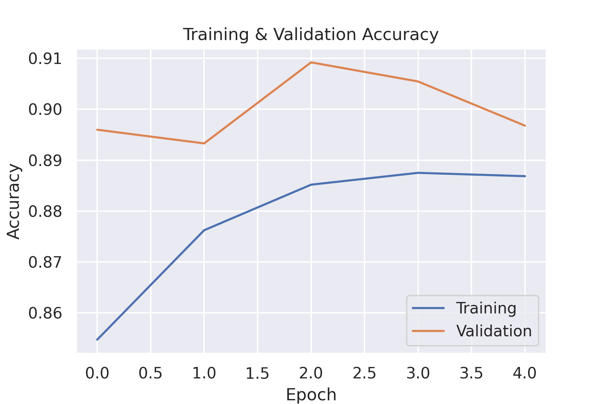

Is it fake?
Fake news affects us all. That's why we developed a Machine Learning model to detect them. Read on to find out the results.
By FD Data Team
Can anyone tell what is true and what is fake news anymore?
From the weaponisation of Covid-19, to devastating meteors en route to destroy earth, and that notion that Pope Francis endorsed Trump in the US presidential race.
Most fake news, however, is difficult to decipher which has led to many people airing on the side of caution and increasing their deep mistrust of the media.
What is fake news
Fake news is misleading information deliberately spread as “news” typically online.
There is an important difference between fake news and simply inaccurate reporting: fake news implies that the misinformation is absolutely deliberate.
About half of adults in the UK believe they see or read fake news everyday.
According to the International Computer and Information Literacy 2019 Study (ICILS) of the International Association for the Evaluation of Educational Achievement (IEA), only 2% of the young people interviewed showed skills in selecting or identifying information online, although 89% said they felt proficient at the task.
And according to a survey by JournoLink 45% of the British public believe they encounter fake news online every single day.
Why is it important? Does it affect us?


The reported effects of fake news includes:
DISTRUST IN THE MEDIA
THE DEMOCRATIC PROCESS BEING UNDERMINED
INCREASES IN CONSPIRACY THEORIES AND HATE SPEECH
THE GENERAL SPREAD OF FALSE INFORMATION TO THE DETRIMENT OF PUBLIC SAFETY
What have we done about it
If fake news could be distinguished from real news then the spread of misinformation would reduce.
This is why we have built supervised machine learning models and deep learning models using Natural Language Programming (NLP) to predict whether the news is real or fake.
Fake News detection requires only Natural Language Understanding. NLU is a sub-category of NLP that gives computers the ability to understand the meaning of a piece of text.
We hope this technology could be widely used in future to detect and flag fake news and disinformation.
The Data
We used the Fake News Detection dataset from a Kaggle's Fake News Detection Competition. And we decided on this dataset as it was the most balanced and complete dataset we could find for our task.
The dataset was split into 2 files, true news and fake news, with 4 columns: title, text, subject and date. It contains 20826 Real News articles and 17903 Fake News articles. This means our data is relatively balanced.
With over 50,000 rows of data, we began by undergoing data cleansing and data exploration, then performing data analysis and sentiment analysis before building our Machine Learning and Deep Learning models.


The use of histograms helps to visually compare differences between fake news and real news.
Fake news headlines on average tend to have more words, suggesting they are longer in length.
Real news headlines are shorter in length, with a majority of titles being under 100 words.
Although both datasets appear to be balanced, Fake news article count appears to be more consistent throughout the timeframe of our dataset.
While the Real News is consistent between 2016-2017, there is an increase spike in August 2017.
To avoid bias in the dataset we have removed this column as well.
These word clouds show sentiment analysis of headlines and content. Text analysis shows an interesting consistency in both sets of data, which the word clouds interestingly display.
Originally, Trump claimed he would run for president since the 1980s. Most people believed this to be a publicity stunt.
As you can see from both word clouds, the shock of his claims coming to fruition consistently made headlines during this time.
Predicting Fake News with NLP
In order to have a good result with the machine learning model, it is important to follow a series of steps, mainly related to the pre-processing of the data:

Pre-process Data
Process Text
-
Target Column: Title. Title words converted into lowercase, removed all stop words and special characters.
Tokenization
-
Text data was tokenized with RegexpTokenizer() to split strings into substrings using regular expressions. and then a Stemming algorithm PorterStemmer() was used to stem the tokenized words (break down sentences into words).
-
The text data was tokenized using a Tensforflow Tokenizer library and then sequenced.
We trialed 2 ways of tokenizing:
Stemmitization
-
Stemming algorithm PorterStemmer() was used to stem the tokenized words (break down sentences into words).
Train-Test Split
-
Data was split into Train and Test data to evaluate the performance of our Machine Learning Algorithm.
Vectorize Train and Test Data
-
In NLP, Textual Data needs to be Vectorized because NLP Models can't understand Textual Data, only Numerical Value.
-
We used CountVectorizer() as the last step in Pre-processing to encode all words and return integer count for the number of times each word occurs in a sentence.
Choosing the best model
We took a 2 step approach.
Firstly, we implemented 6 Binary Classification Algorithms to see if we could accurately predict whether news was fake or real looking at the headlines (titles).
Secondly, we implemented 2 different Deep Learning Models to measure their accuracy to detect Fake News.
| classifier | accuracy | recall | precision | f1_score | |
|---|---|---|---|---|---|
| 0 | SVM | 0.951209 | 0.928649 | 0.971903 | 0.949783 |
| 1 | PassiveAggressiveClassifier | 0.942793 | 0.935562 | 0.944560 | 0.940039 |
| 2 | RandomForestClassifier | 0.936168 | 0.918796 | 0.949463 | 0.933877 |
| 3 | MultinomialNB | 0.933393 | 0.940483 | 0.917782 | 0.928994 |
| 4 | AdaBoostClassifier | 0.846106 | 0.776714 | 0.948520 | 0.854062 |
| 5 | KNeighborsClassifier | 0.763026 | 0.831007 | 0.628701 | 0.715835 |
Confusion matrix
Deep Learning Neural Network Models
NLP Sequential Model
For the Supervised Learning Model we used a Keras Sequential deep learning model. We created a neural network model and the resulting accuracy was higher than the previous models. This model works best as a binary classifier and additional layers were added to account for the text classification: the Embedding layer converts sequences into arrays of word vectors and the Dense layer classifyies arrays of word vectors.
The below plot highlights the accuracy of the model:
Although, we suspected that the model may have overfitted on the training data due to the low loss rate and high accuracy rate in addition to the slight increase in the validation loss.
In addition to this, this model had a slighlty lower accuracy rate than the Support Vector Machine model.
To investigate this further we would:
- train a SVM model on the same preprocessed data that the NN model was trained on.
- run the SVM model fully and compare the loss in addition to the accuracy to the NN model.
- compile and train a convolutional network model to see how this compares to SVM and NN models.
We predict that a Convolutional Network Model would have a higher accuracy and lower error rate. This is because convolutional neural networks automatically detect import features in addition to other advantages over other neural network models.
BERT Model using Tensor-flow's hub
BERT is a new method of pre-training language representations from Google which outperforms previous methods on a variety of NLP tasks.
BERT stands for “Bidirectional Encoder Representations from Transformers”. It uses a transformer model, applying the bidirectional training of Transformer using an encoder-decoder architecture. BERT only uses the encoder part of this architecture because its goal is to generate a language model.
Apart from splitting the Test and Training data we skipped all the Pre-processing steps in our other Models because we used Tensorflow-hub's BERT preprocessor and encoder.

Result after only 5 epochs:
The model reached an accuracy level of almost 0.90 and a low loss score of 0.23 on the testing data. The validation accuracy starts to dip slightly after 3 epochs but the BERT Model performed relatively well on Predicting Fake News after just 5 epochs.
This model was different in that it was designed to predict whether news was Real or Fake by giving it a score between 0 and 1. Like the previous Neural Network model it could be used to create a web application to predict Fake or Real news, where the user could input the title of an article and the application would predict the probability of it being either Real or Fake.
BERT is quite powerful and is preferred for it's ease of use and how simple it is in quickly building machine learning models and in our case the dataset was probably too small to showcase its total power.
Analysis
We tested our NLP model on completely new unseen data. We chose fake news text and true news text and ran it through our model.
True News Test
China Signals Missile Launch Over Taiwan.
This string resulted in a prediction probability of 0.9997772. This therefore tested correctly using our model.
Fake News Test
All of this without even discussing the millions of fraudulent votes that were cast or altered!
This string resuted in a prediction probability of 0.036136717 which tested correctly using our model.
Variations of this text was repeated by Trump 76 times. The implications for democracy is explicit. With this qoute in addition to Trump's insistence that the election was rigged, and the dozens of lawsuits, aims to undermine the democratic process and intensify the emotions of Trump's followers.
Indeed, this claim directly led to a mob of Trump supporters storming the Capitol on Jan. 6 while formal certification of Biden's victory was underway (Washington Post, 2022).
Similar actions by past leaders has lead to dire consequences on citizens of nations, world conflicts, and deep mistrust in the democratic process.
Conclusion
If fake news could be distinguished from real news then the spread of misinformation would reduce. It would also have positive ramifications for democratic processes, the spread of hate speech, and public safety.